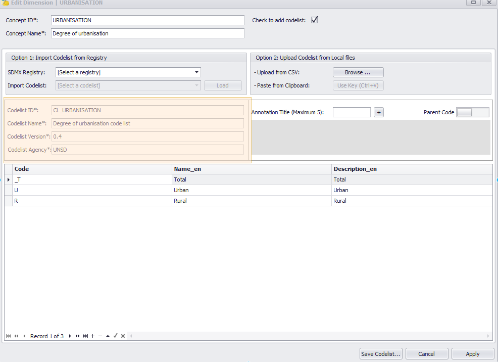
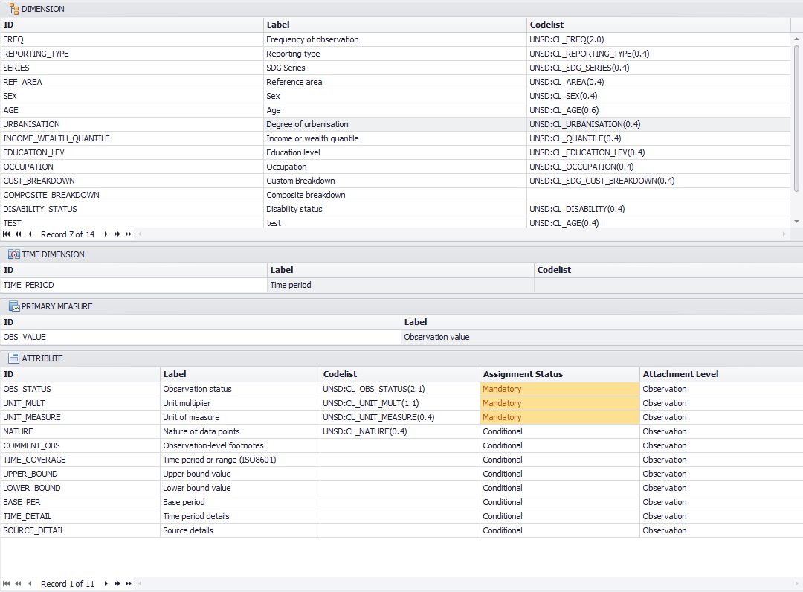
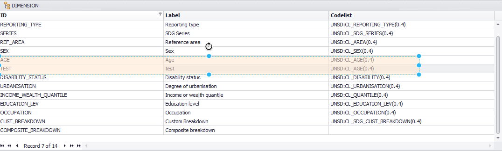

Change Log
We are constantly updating and improving the program, the new features and bug fixing will be updated in Change Log for successive new releases.
DISCLAIMER: The usage of the DSD Constructor software is entirely at your own risk and may void warranty on your products. The ILO shall not be liable for any damage, however caused, arising directly or indirectly from or in connection with the usage of this software.
Version 1.6.0.11 - Minor Release (10 Mar 2021)
Bug fixes- The current version of DSD constructor ignores the isFinal flag on the Concept Scheme. Issue tag: DC-31.
Version 1.6.0.10 - Minor Release (9 Mar 2021)
Bug fixes- Generic error “Object reference not set to an instance of an object.” occurs when the children references of the uploaded DSD are incomplete. Issue tag: DC-30.
Version 1.6.0.7 - Minor Release (19 Jan 2021)
Bug fixes- The multilingual entries in codelist are not being kept. Issue tag: DC-29.
Version 1.6.0.6 - Minor Release (25 Nov 2020)
Improvements- Rename all the "Label" caption into "Name". Issue tag: DC-26.
- Display ConceptScheme as a new column in the input panel by default. Issue tag: DC-25.
- Tutorial videos. Issue tag: DC-22.
- New treatments for ConceptSchemes in the DSD Constructor. Issue tag: DC-23.
- Independent management of AngencyScheme and ConceptScheme artefacts. Issue tag: DC-20.
Version 1.5.0.9 - Minor Release (13 Feb 2020)
Bug fixes- Agency ID in categorization should be the default Agency. Issue tag: DC-15.
Version 1.5.0.7 - Minor Release (10 Feb 2020)
Bug fixes- CategoryScheme, categorization and dataflow handler. Issue tag: DC-12.
Version 1.5.0.5 - Minor Release (14 Oct 2019)
Bug fixes- Fix the bug for the generation of versions in output DSD. Issue tag: DC-11.
Version 1.5.0.3 - Minor Release (7 Oct 2019)
Improvements- Item annotation will also be considered as valid when the annotation title is presented. Issue tag: DC-10.
Version 1.5.0.2 - Minor Release (18 Sep 2019)
Improvements- Change the update checking at the end of the program.
Version 1.3.0.18 - Minor Release (19 July 2019)
New Features- Warning message: Multilingual input confirmation.
When the input codelist or DSD has any extra language besides the user configured language(s), the user needs to be informed and confirm if they want to continue. If yes, those extra languages will be discarded.
For example, if the user selects EN and IT as the default language, and a codelist uploaded contains names in EN, FR and ES. A warning message should be fired up for any upload event at the first time, and if the user confirms with YES, the information in FR and ES will be discarded automatically.
- Codelist Item Annotation - Read Type, Title and Text (with localization). The current
implementation for the annotations at the item level only handles "Type" together with
multilingual "Text". This improvement aims to extend it to allow "Title" presented as
well. The following steps are summarized in order to achieve this:
-
For any annotation "Type", create a default column with the same name as the "Type" in the table frame, and this default column will be used as the data entry for "Title".
-
To avoid listing too many columns in the table frame, provide a right-click menu on the column header to hide/unhide all empty columns.
-
Version 1.3.0.17 - Minor Release (23 May 2019)
Bug fixes- Polish the generate error reporting.
- If any dimension or attribute without a label (Default Name), an error message will popup first before the generating process.
Version 1.3.0.13 - Minor Release (17 May 2019)
New Features- Support saving any codelist as the .STAT Version 7 Dimension.
Version 1.3.0.12 - Minor Release (9 May 2019)
New Features- Versions can be assigned to each artefact independently.
- When read a dataflow, its annotations were assigned to the DSD level.
Version 1.3.0.11 - Minor Release (8 May 2019)
New Features- Read Dataflow.
- Annotations can be attached at Dataflow and DSD level.
- Annotations can be attached at Codelist level (besides at the items level).


- When duplicated codes were added in the "Edit Codelist", this should trigger an error message.

Version 1.3.0.9 - Minor Release (6 May 2019)
New Features- Setting the attachment level of attributes to "DimensionGroup" is now supported.

Version 1.3.0.7 - Minor Release (16 Apr 2019)
Bug Fixes- The agencyID and version in the local reference of any concept has been overwritten by the global settings.
Version 1.3.0.6 - Minor Release (12 Apr 2019)
New Features- Add a new button "Support" for client support.
- Under Editor "Edit Concept" and "Add Concept", add an option to upload codelist from local XML.
- In the "Generate" form, add a new Toggle button "Export Separate Artefacts" to allow outputing SDMX artefacts separately.
Version 1.3.0.3 - Minor Release (10 Apr 2019)
New Features- Add a new button "Save Codelists" to save all the listed codelists in a separate SDMX-ML.
- Under Editor "Edit Concept", add a new Toggle Button for "IsFinal" flag and button "Save SDMX-ML" to export an individual codelist.
- In the "Generate" form, user can assign a "IsFinal" flag for ConceptScheme, DSD and dataflow.


Version 1.3.0.2 - Minor Release (14 Mar 2019)
Bug Fixes- When loading concept from any SDMX registry, the triple keys of codelist was not properly referenced.
- In Edit Concept mode, the load codelist didn't reset the existing codelist.
Version 1.3.0.1 - Minor Release (18 Feb 2019)
Changes- The codelist agency and version are available to modify.
- In all the concepts, the codelist reference is set to the triple keys: AgencyID:CodelistID(CodelistVersion)
- A codelist can be referenced by multiple concepts.


